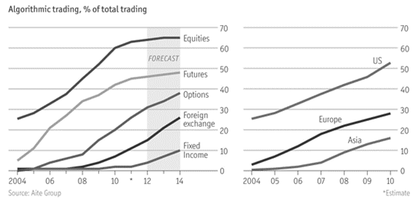
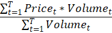
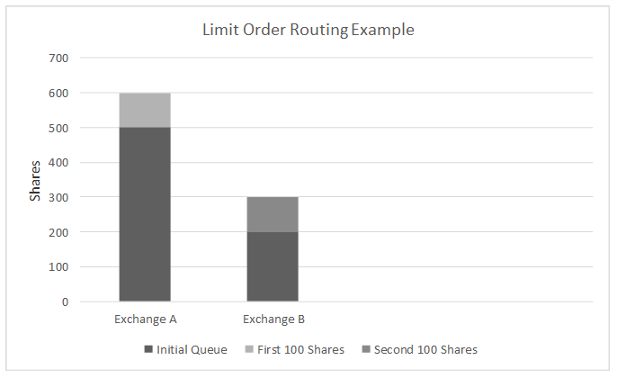
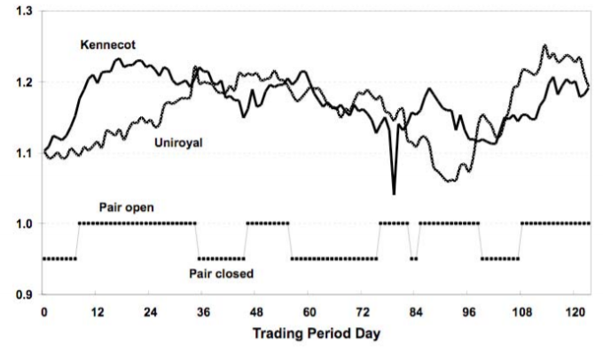

Contents
- Introduction
- Trading Algorithms
- Time-Weighted Average Price
- Volume-Weighted Average Price
- Routing Algorithms
- Pairs Trading
- Concluding Remarks
- Sources
Introduction
The first sentence in the introduction to a 2001 landmark paper written by Das et al., in which they showed two simple algorithmic trading strategies to consistently outperform humans reads, “We envision a future in which economically intelligent and economically motivated software agents will play an essential role in electronic commerce”. The study reported that these two algorithms consistently outperformed six non-expert traders by significant margins. While this is not the most remarkable result per se, the portentous idea with which the authors began the paper did in fact come to fruition.
To put this paper in the broader context of the technological progress through the 90’s and early 2000’s, it should be said that stock trading was not the only test of human intelligence to be overcome by machines during that era. 1992 had seen the world’s first computer program capable of playing expert backgammon, and in 1997 IBM’s supercomputer Deep Blue beat the reigning chess world champion, Garry Kasparov. While the connection between chess, backgammon, and stock trading may not be obvious, they share stochasticity among other game-theoretic properties, making them ideal challenges for the maturing computational methods of the time.
The authors of the 2001 papers cite speed as one distinct advantage the computer had over the human trader in their study. To give a simple example of how this might play out, if someone is trying to sell at an unreasonably low price, a computer can jump on the mistake and execute a trade, limited only by latency incurred in the network. A human, on the other hand, needs to observe the ask, compare it against other figures to reason about its value, and then move the mouse over to the button where it can make the trade, never standing a chance.
Somewhat counterintuitively, trading at a high frequency actually lowers risk. Imagine a function that sets a limit on how much a stock is allowed to drop in price before losses are cut and it gets sold. When properly bolstered with statistical reasoning about price movements based on historical data, a computer can draw the conclusion that the stock’s price is going to continue to fall much faster than a human can. Even if the amount saved by this speed difference is miniscule, over tens or even hundreds of thousands of trades the savings are going to add up to something significant.
You may be wondering, if trading programmatically is so effective, surely everyone must be doing it? Correct. The graphic pulled from the Financial Times shows the degree to which this is the case. We can see that as of 2012, a majority of equities trades were made using an automated system. While these figures are a little outdated, they speak to the meteoric rise in algorithmic trading that began at the turn of the century.
More recent estimates peg the percent of equities trades at around 70-80%, a figure which has held steady over the last five to ten years. Even those markets lowest on the list, namely foreign exchange and fixed income markets, have become dominated by algorithms in the years since 2012.
It is my hope that at this point I have sufficiently motivated a discussion about trading algorithms. An important idea to keep in mind as we delve into the minutiae of how different algorithms work is that not all algorithms accomplish every aspect of making a trade. That is, it takes a whole unified system to identify which assets to trade, which exchange to trade them on, and how to send out the order for them. This paper will discuss methods to solve all three of those problems, but understand that reasoning about which stocks are promising to trade is fundamentally a more difficult problem. The method that is described here is one analytical solution, but other more advanced ones can involve analyzing real-time economic data, and can draw from artificial intelligence methods in natural language processing and computer vision. That is not to say the other problems are easy, especially when you consider that a trading algorithm’s purpose is not just to complete a simple task, but actually compete against other traders. However, they can be effective using more static computational methods.
At the very end of this paper is a big section on trading terminology. Becoming familiar with trading terminology was one of the largest barriers I encountered when beginning to learn about algorithmic trading. If you come across a trading term you are unfamiliar with, chances are it is defined in that section. In fact, the terminology section is a superset of the terms used in this paper. The ones not mentioned here are other words I came across when doing research for this paper that I thought might be useful for those wishing to learn more beyond what is in the scope of this paper.
Lastly, I would like it to be known that this paper draws heavily from Jeffery Bacidore’s Algorithmic Trading: A Practitioner’s Guide. Bacidore has been the head of algorithmic trading at Goldman Sachs and Virtu. If you want to learn about this topic more thoroughly, I suggest you do so from a real expert.
Trading Algorithms
n this section we will examine some common trading algorithms. These algorithms were chosen because they are illustrative of trading concepts, not necessarily because they are the most effective. The first two address the problem of reducing an order’s market impact by sending it out according to some schedule. Accordingly, these algorithms are referred to as scheduling algorithms. Next, we will look at smart routing, the problem of deciding which exchange among a set of exchanges to route an order to so as to maximize value. To round off our discussion, we will look at one strategy for deciding which stocks to trade, and when to trade them. With these three components defined, we will effectively have gone over one instance of a complete trading system. Please note that what is described in this paper does not necessarily amount to the most robust or effective trading strategy. The idea is to give the reader an intuition on how to apply algorithmic thinking to stock trading.
Time-Weighted Average Price
The main idea for time-weighted average price (TWAP) is to trade at a rate proportional to time. That is, the algorithm sends out “child” orders, subsets of the parent order, according to some schedule over a determined time interval. Sending out the entire order by the end of the time interval is the objective of the algorithm.
To give a simple example, suppose we want to execute a 6,000-share order over one hour. Keeping the algorithm’s objective in mind, it might have sent out 3,000 shares after thirty minutes, 5,000 shares after fifty minutes, and have the whole order executed when the hour is up. In this simple implementation, we have three parameters: the size of the parent order, the size of the child orders, and the total time over which we are trading. Now suppose our parent order is 3 million shares but we reduce the size of our child orders to 100 shares. We would then be sending out an order every 0.12 seconds, a recipe for incurring latency in the system.
As another layer of complexity, consider now the effect of trading market orders versus limit orders. Given that market orders realize a less favorable return than trading limit orders on average, sticking to that type of order strictly would be unwise, though our algorithm would be guaranteed to run according to its schedule. On the other hand, because limit orders are not guaranteed to execute, we run the risk of building up a large number of orders that execute all at once at the end of the time interval. Therefore, the best strategy for this algorithm with respect to these two parameters is one that leans on market orders when it needs to so it can keep up with the schedule, but sticks to limit orders otherwise.
One way to do this is to set bounds for how far the algorithm is allowed to get ahead or fall behind its schedule. If the algorithm is trading more shares per unit time than its schedule dictates, it can begin sending out limit orders since it has a buffer to fall back on. On the other hand, if it is right up against its lower bound, the algorithm will immediately send out marketable orders to get itself back on track.
A straightforward way to set the bounds would be to do so in terms of the order size. This can lead to problems, however, because if the order is sufficiently large and the algorithm needs to send out as many marketable orders as it can to get it from the lower bound to where it has a larger buffer, other traders might adjust their pricing in a way that is unfavorable to us. More sophisticated methods for setting the bounds involve doing so in terms of the asset’s liquidity or even based on real-time market conditions.
A reasonable question to ask at this point would be, why would you send out orders proportional to time in the first place? One answer would be the point that was touched on above. Sending out a large order all at once can have an adverse effect on the price of the stock. Doing so might tip off other traders who lower (or raise) the amount they are willing to buy (or sell) for. In practice, TWAP gets used only as a method to send out orders, so as to prevent the above scenario. Other methods get used to figure out when to send the parent order as a whole. These methods will be discussed later.
Volume-Weighted Average Price
Nominally, volume-weighted average price (VWAP) can refer to a scheduling algorithm, similar in nature to TWAP, or a mathematical definition for the average price at which a stock has traded over the course of some time period weighted by, you guessed it, volume. We will start with the math because the definition is simple and it will inform our discussion of the scheduling algorithm. The idea is, for each time interval, sum the product of the price of a stock and the volume at which it was traded, and then divide by the sum of the volume over those same time intervals. In other words,
This formula is usually used only to calculate average price of a stock over the course of a day. Using this equation to compute averages over longer time horizons may capture too much noise to be useful. This equation can be used as benchmark for a trading strategy. If the price of a stock differs from its volume-weighted average, one might be able to assume that it will move back towards it in the future. Note that this is not the same as the moving average of a price. The moving average does not incorporate volume. As we will see, using a benchmark that factors in volume will allow us to be clever about how we send out child orders in the scheduling algorithm.
As noted above VWAP falls into the same class of TWAP in that its purpose is to make sure the price of a stock does not move when orders for it are sent out. Instead of sending out orders proportional to time, however, VWAP does so proportional to volume. That is to say, VWAP will trade more frequently over time intervals where it is usually the case that a given stock is traded at a higher rate. Using this method, VWAP attempts to be stealthier than TWAP by hiding its order among a crowd of increased volume.
VWAP, like TWAP, uses the idea of bounding around the schedule to keep the algorithm on track. Notice that because TWAP sends out orders proportional to time, which of course increases linearly, the bounds for that method are straight for the whole time the algorithm runs. The bounds for VWAP, on the other hand, steepen or flatten proportional to changes in volume. In practice, time get discretized into bins, over which the algorithm trades at a constant rate. Therefore, over one such bin, VWAP and TWAP actually behave identically. Small bin sizes are usually preferred in order to get a finer estimate of the trading volume.
At this point in our discussion, I would like to reiterate that VWAP is still a scheduling algorithm, which means that its objective is to send out an order over some preset time horizon. Even when we incorporate volume averages, the algorithm is still going to send out the entire order by the end of the time horizon, regardless of the absolute volume levels of a stock. Therefore, volume levels only inform the algorithm insofar as the relative size of child orders is concerned. If the realized volume is consistently greater than the historical average, then the algorithm will not send out orders at an increased rate. Only when the historical volume curve bends in a sufficiently predictable way will the algorithm increase the rate at which it trades. In math speak, we look at the second derivative of the volume averages as a cue to increase the size of child orders.
A quick note about volume estimation...
The scheduling algorithm incarnation of volume-weighted average price involved having an idea of what the volume is likely to be. If we had access to an oracle which told us when volume was going to change, this whole paper would be a waste of time and you would already be off printing money from your laptop. In the absence of such an oracle, however, we need to estimate the volume profile using historical averages. This can be done using data over some days or months leading up to the current trading day. For the most actively-traded assets, we can gather historical data for those individual assets. For the rest of them, we can group them according to some characteristic using k-means clustering or some similar method.
Routing Algorithms
Suppose now we are sending out a VWAP or TWAP child order. The task of sending it to a venue is called routing. Deriving analytically a strategy for sending it to a certain venue or set of venues is that act of smart routing. The type of order you are sending out, market or limit, as well as the rules of the venue you are sending it to, whether it’s lit or dark, have large bearing on the strategy you employ. This paper will focus only on sending market or limit orders to lit venues.
The intuition behind deciding where to send marketable orders is straightforward. If it is a buy order, simply route the order to the venue that is selling at the lowest price. If the size of the best offer is smaller than the size you want to buy, buy as much as you can from that seller, then as much as you can from the next most favorable seller, and so on until you have completed the entire order.
This problem becomes more challenging when the quotes are changing quickly. If you send out a buy order when the price is at $20.00, by the time it executes the price might have moved to $20.03. The difference in price is called the implementation shortfall. Had you known the order was actually going to execute at the higher price, you might have made a different decision about what venue to send it to. We can avoid this problem by using a marketable immediate-or-cancel limit order. That is, we send out an IOC limit order at the best market price, $20.00 in this example, and if the price has gone up by the time our order get to the venue, the order gets cancelled. This way we reduce the implementation shortfall. Returning to the original problem of routing the order to the venues that will yield the best price, we can lean on marketable IOC limit orders heavily to reduce the surprises incurred from changing market prices.
The problem of routing limit orders optimally differs substantially from routing market orders. If we suppose that the venue we want to send the order to uses price-time priority, which is to say orders are executed in the order they were received for a given price, then the problem becomes picking the venue that is most likely to execute our order before the market price moves. This can be thought of as trying to decide which aisle to check out in at the grocery store. You have an idea of how long the each of the lines are based on how many people are in each line and how many groceries each of those people have, but your decision also depends on how quickly the clerk is checking people out. You want to pick the lane that is most likely to be the quickest given these two observations.
The departure from the grocery store analogy is that in trading, we can send the order to multiple venues if putting a portion of the order in on queue means the entire order will execute faster if the rest of it goes into another one. Consider the following example where we have an order of 200 shares, and we are deciding whether to send it to Exchange A, Exchange B, or both. Say the trading rate, which for this example will be the number of seconds it takes an exchange to execute 100 shares, is 7 seconds for Exchange A and 20 seconds for Exchange B. The queue in Exchange A is much longer that Exchange B’s, as shown in the graph below. For simplicity, let’s say we are only trying to decide between sending out 200 shares at once or splitting it up into two 100-share orders. We can decide where to send the first 100 shares by calculating which exchange is going to drain its initial queue fastest. Since there are 500 shares in Exchange A’s queue, and its trade rate is 100 shares every 7 seconds, it will drain its queue in 35 seconds. By the same reasoning, Exchange B will drain its queue in 40 seconds. So, it’s clear that we would want to route at least the first 100 shares to exchange A. Now we decide where to send the second 100 shares, conditioned on the fact that the first 100 shares went to Exchange A, thereby increasing the length of its queue. Routing all 200 shares to Exchange A means executing the whole order would take 35 + 7 + 7 = 42 seconds. Routing the first 100 shares to Exchange A and the second 100 shares to Exchange B means the total execution time takes as long whichever exchange is slower in executing its initial queue plus the 100 additional shares. In this case Exchange B takes longer to drain our order, taking 40 + 20 = 60 seconds. So, routing all 200 shares to Exchange A would be more efficient.
The big assumption we have made here is that we know definitively what the trading rate is going to be for each exchange. In reality this is not the case. In practice one would use past execution data to create a model for how fast each exchange is likely to drain, and base our decisions on that model.
Pairs Trading
Pairs trading is one commonly-used strategy for determining which assets to buy. The general idea is to first define a ratio between the price of two stocks which have historically moved together. The assumption is that the underlying processes which governs the price of the each of the stocks is related in some significant way. When their prices deviate from the historical average, you buy the underperformer and sell the overperformer. Therefore, the efficacy of this strategy lies in its counterintuition. Buying a stock that is underperforming is generally a bad idea per se, though not when it’s on the basis of this kind of statistical analysis. In fact, in the original 1989 paper which introduced pairs trading, the author stated that “…Human beings don’t like to trade against human nature, which wants to buy stocks after they go up not down.” While some may roll their eyes at a psychological justification for a trading strategy, in a sense trading is a competitive game played against other people, and having an intuition that others do not can give one an advantage.
The first question in developing a pairs trading strategy is that of finding stocks that move together. The most common method for doing this is using a statistical method called cointegration. Cointegration specifies the shared movement of price over a long period of time. This topic is one that deserves much more time than will be allocated for it in this paper, so curious readers might look through the sources section for papers and websites which delve further into cointegration.
To understand cointegration, we first need to define another concept, stationarity. A time series is said to be stationary if its distribution does not change over time. Specifically, both the type of distribution and the parameters for that distribution must not change with time for that process to be considered stationary. The canonical example of a stationary time series is white noise, but as a more useful example, if a stochastic process (like price data) follows a Gaussian distribution for the entire time horizon, and the mean and variance do not change over that interval, then that process is stationary.
Stationarity is a pretty common assumption to make in statistical forecasting. If you are trying to predict the outcome of some process in the future, it makes your life a whole lot easier if the way the data will be distributed in the future the same way it has been historically. Furthermore, typical statistical descriptors such as mean and standard deviation no longer make sense in the context of a non-stationary process.
The second notion from statistics we need to gain familiarity so we can understand cointegration is order of integration. This is another rabbit hole one is free to go down, but for our purposes, the order of integration of a time series, denoted I(d), is the minimum number of differences required to derive a stationary series. So (for our purposes), a time series with order of integration zero is stationary.
Now on to cointegration. A common assumption in mathematical finance is that returns are I(0). Of relevance to traders is that price is I(1). Our definition of order of integration tells us we need one difference in price time series to achieve a stationary process. In other words, we need a pair of asset prices! Formally, two I(1) asset price series, let’s call them x_t and y_t, are cointegrated if there exists some β such that z_t=x_t- βy_t is I(0). This tells us that we can use the familiar properties of I(0) time series to trade both assets at the same time. The last thing to do is to find the coefficient β that satisfies the equation. This can be done using either the Engle-Granger or Jonhansen tests, the details of which are outside the scope of this paper.
The intuitive interpretation is that the two assets have in common whatever is making their pricing time series non-stationary; steel manufacturers and steel suppliers might move up and down in response to the same underlying factors. Because their spread z_t is time-invariant, the stock prices of the manufacturer and supplier will move together so long as they cointegrate. For the average trader, picking pairs of assets based on this kind of simple economic reasoning is good enough. One can verify the stationarity of their price difference using the Augmented Dick-Fuller test, which can be done easily in Python or R. Once β is found, we can start defining a strategy for actually taking a position on the assets.
A naïve way to define when to take or unwind a position is to arbitrarily choose some standard deviation of the mean of the weighted asset price difference at which to open or close a position. Take a look at the figure taken from a paper by Goetzmann and Rouwenhorst (2006). The stock prices here are from Kennecot and Uniroyal during a six-month period in August 1962. For the purpose of this example, we can tell by eye that these stocks move together, but in practice we would want to verify this using the statistical methods described earlier. In the first interval where we open a position, Kennecot outperforms its historical average while Uniroyal underperforms. Accordingly, we would want to short Kennecot and long Uniroyal. We are betting on each stock to revert to its historical average. When the stocks eventually converge back to their mean, we close our position. How and where should we send out the order for the stocks? Well, fortunately we already have an answer for that in time or volume-weighted average price and smart routing.
A more sophisticated method for determining the standard deviation at which to open or close a position could be determined by running a Monte Carlo simulation on the pair of assets you intend to trade. This could be done to ascertain which entry and exit points have historically yielded the greatest gains. Another recently-discovered method involves modeling the price spread using an Orenstein-Uhlenbeck process, which we will not discuss in detail here.
Concluding Remarks
It should be clear by now that building an algorithmic trading system involves more than a single algorithm. Picking stocks to trade, deciding how to schedule orders, and choosing where to route an order are all problems that require their own logic. It is my hope that through touching on each of these in a little bit of detail, the bigger picture of how to design a trading system can be seen. With that being said, what has been revealed here is only the surface. There are many analytical strategies I did not mention, as well as many much more advanced methods such as those involving scraping the Internet for positive news about a company or using satellite data to track real-time economic activity. As per usual, the sources cited are one good place to delve deeper into the topics covered. I would also like to mention again the book Algorithmic Trading: A Practitioner’s Guide by Jeffrey Bacidore, which served as the launching point for much of what was mentioned in this paper, if not the basis. Those interested in applying machine learning to this problem might be interested in Machine Learning for Algorithmic Trading by Stefan Jansen. The book is very long, and comes accompanied by a repository of Jupyter Notebooks written in Python. Another good resource for those interested in putting the concepts described here into code is QuantConnect, which is essentially a one-stop shop for implementing a trading system.
Sources
Bacidore, Jeffrey M. Algorithmic Trading: A Practitioner's Guide. TBG Press, 2020.
Caldeira, João, and Guilherme V. Moura. “Selection of a Portfolio of Pairs Based on Cointegration: A Statistical Arbitrage Strategy.” SSRN Electronic Journal, 2013, doi:10.2139/ssrn.2196391.
Cliff, David. (PDF) My Family and Other Algorithms - ResearchGate. 2007 Euromoney Algorithmic Trading Handbook, 2007, www.researchgate.net/publication/39995339_My_Family_and_Other_Algorithms.
Cont, Rama, and Arseniy Kukanov. “Optimal Order Placement in Limit Order Markets.” SSRN Electronic Journal, Oct. 2014, doi:10.2139/ssrn.2155218.
Engle, Robert F., and C. W. Granger. “Co-Integration and Error Correction: Representation, Estimation, and Testing.” Econometrica, vol. 55, no. 2, 1987, p. 251., doi:10.2307/1913236.
Fernando, Jason. “Volume Weighted Average Price (VWAP) Definition.” Investopedia, Investopedia, 20 Apr. 2021, www.investopedia.com/terms/v/vwap.asp.
Goetzmann, William, and K. Geert Rouwenhorst. “Pairs Trading: Performance of a Relative Value Arbitrage Rule.” Yale International Center for Finance, 1999, doi:10.3386/w7032.
Hansell, S., 1989, “Inside Morgan Stanley's Black Box,” Institutional Investor, May, p.204.
Leung, Tim and Xin Li. “Optimal Mean Reversion Trading with Transaction Costs and Stop-Loss Exit.” International Journal of Theoretical and Applied Finance, vol. 18, no. 03, 2015, p. 1550020., doi:10.1142/s021902491550020x.
McGowan, Michael J. “The Rise of Computerized High Frequency Trading: Use and Controversy.” Duke Law and Technology Review, No. 016, 2010, doi:10.1002/9781118662717.ch16.
“Pairs Trading with Stocks.” QuantPedia, quantpedia.com/strategies/pairs-trading-with-stocks/.
Quantopian. “Integration, Cointegration, and Stationarity.” YouTube, YouTube, 14 July 2016, www.youtube.com/watch?v=Pn_RiDbK82M.
Wang, Yefeng. “An Introduction to Cointegration for Pairs Trading.” Hudson & Thames, 9 Apr. 2021, hudsonthames.org/an-introduction-to-cointegration/.